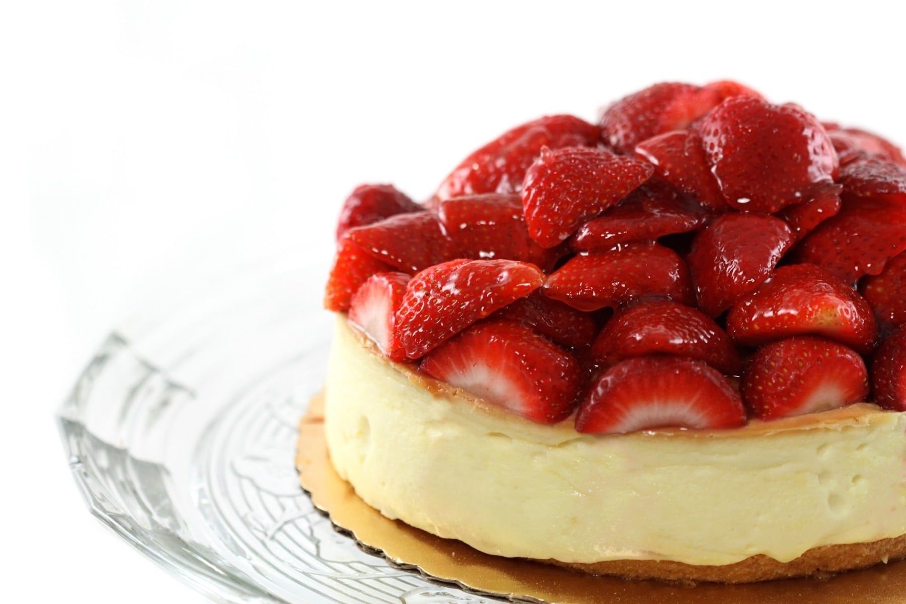

Cheesecake de queso y fresa

Ingredientes:
| Ingrediente |
Cantidad |
| Grenetina |
4 Sobres |
| Leche Condensada |
1 |
| Leche Evaporada |
1 |
| Queso crema |
3 barras |
| Galletas Marías |
2 Paquetes |
| Mantequilla |
2 Cucharadas |
| Fresa cortada |
1 canastilla |
| Agua |
1 taza |
| Azucar |
3/4 taza |
Preparación:
♦ En una olla colocas las
fresas, el agua y el azúcar. Lo dejas hervir aproximadamente 10 minutos hasta que veas que las
fresas empiezan a ponerse algo transparentes , sueltan el color rojizo y tiene una textura acaramelada. Lo pones en la licuadora le agregas dos sobres de
grenetina y lo dejas batir, lo reservas.
♦ Para el crust: Mueles en la licuadora las
galletas maria, la agregas en el refractario y le incluyes las cucharadas de
mantequilla, amasas hasta que quede una pasta, lo pones en el fondo del refractario donde vas a realizar el pie y empiezas a aplanar con un vaso, reservas.
♦ Pones en la licuadora la
leche condensada, leche evaporada, las barras de queso y la grenetina hidratada, lo licúas, añades la mezcla encima de el crust de galleta, lo dejas unos minutos a que empiece a cuajar levemente y le agregas la mezcla de fresas.
♦ Lo dejas refrigerar durante 3 horas aproximadamente antes de servir.